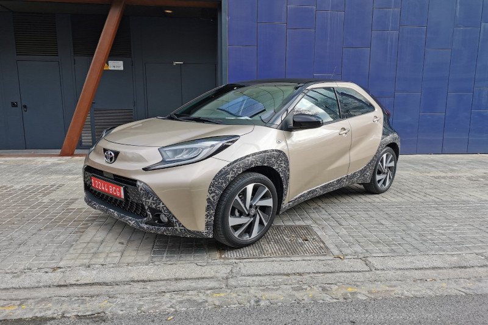
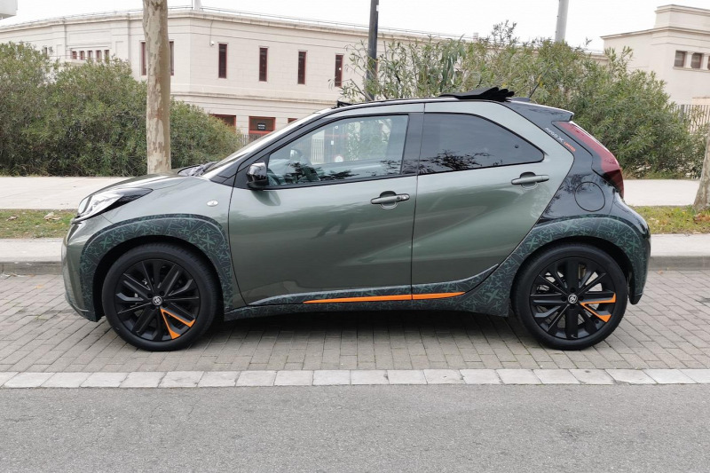
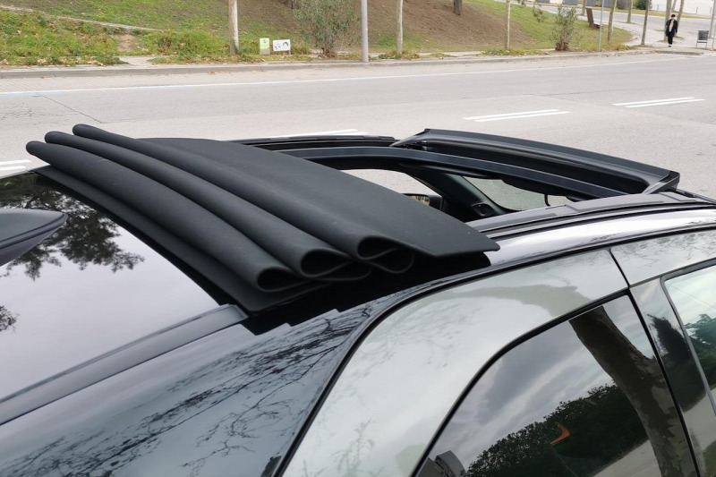

Toyota Aygo X




Egyre nehezebb feladat ötmillió forint alatt Corsa- és Fabia-méretű új járgányt találni, ezért sokan a városi minik kategóriája felé fordulnának. Ott aztán meglepve fogják tapasztalni, hogy igencsak foghíjas lett a kínálat, de meglepetésre felbukkant a harmadik generációs Aygo. Ez a hibridként nem is kapható új modell az előző generáció egyszerűségét viszi tovább, de SUV-os csomagolásban.
Szinte a kihalás szélére sodródtak a miniautók, mivel az uniós széndioxid-kvóták bírságai keményen sújtják őket, az emissziócsökkentő praktikák (és a kötelező biztonsági fejlesztések) árát viszont nemigen lehet továbbhárítani a vevőkre. Korábban az Aygo modellek a PSA-val közösen készültek, mostanra a Peugeot és a Citroen is kihátrált, de nem úgy a Toyota. A japán gyártó persze előnyös helyzetben van, a rengeteg nagyobb hibrid miatt nem kell tartania súlyos büntetésektől. Ez is biztosan szerepet játszik abban, hogy pénzt és időt fektettek az Aygo következő generációjának kifejlesztésébe.
Formavilága láthatóan építkezik a korábbi modellből, de valójában teljesen új autóról van szó. Az orráról eltűntek a jellegzetes X-alakú ívek, amelyeket sokan groteszknek tartottak, helyette a Yaris és a Yaris Cross sejlik föl néhány részletében.
A név mögötti X nem csupán megkülönböztetésre szolgál, hanem a crossover jellegre is utal. Érdekes megoldás „terepjárósítani" egy ekkora csöppséget (egyedül a Fiat Pandából készül régóta Cross kivitel, igaz, 4x4-hajtással), de hát most minden visznek, ami legalább kicsit is SUV-ra hasonlít. AZ AYGO X-NÉL EZ ELSŐSORBAN AZ ALSÓ MŰANYAGBETÉTEKET JELENTI, AMELYEK VÉGIGFUTNAK A KÜSZÖBÖKÖN, AZ AJTÓK ALSÓ RÉSZÉN. És persze a kerékjárati íveken is. Mivel a kipróbált autók még előszériás példányok voltak, ezeket a részeket színes dekorfóliával fedték be, de korábbi bemutatónkban anélkül is találhat róla sajtófotókat.
Apró méretével viszont városban nagyon jól érzi magát, könnyen manőverezhető, kis helyen megfordul, apró parkolóhelyekre is beférünk (főleg kamerával), egyértelműen ez az ő terepe. A kézi váltóssal megtett hosszabb, teljesen vegyes (város, országút, autópálya), kb. 120 km-es utunk során a fogyasztásmérő 5,5 litert mutatott, ami egész közel van a 4,9-es WLTP értékhez. Hogy mindez elegendő lesz-e az Aygo X sikeréhez, hamarosan kiderül.